¿Qué son?
¿Qué son?Para alcanzar una definición acertada del concepto de organismos heterótrofo es necesario establecer el significado de los dos términos que lo componen.
¿Qué son?
Para alcanzar una definición acertada del concepto de organismos heterótrofo es necesario establecer el significado de los dos términos que lo componen.
Organismo y Heterótrofo
Un organismo, a nivel biológico, es el conjunto de órganos que interactúan de acuerdo a las leyes de la naturaleza. De manera extensiva a este significado, organismo puede usarse como sinónimo de ser vivo.
Heterótrofo, por su parte, es un adjetivo que se aplica al ser vivo que no puede tomar una sustancia inorgánica y crear materia orgánica para sí mismo, lo que lo obliga a alimentarse de otros seres vivientes.
Los organismos heterótrofos, por lo tanto, son aquellos que se nutren de otros organismos para obtener la materia orgánica ya sintetizada porque no cuentan con un sistema de producción de alimentos independiente. Esto quiere decir que la obtención de energía, nitrógeno y carbono la logran a partir de alimentarse de otros seres vivos.
Todos los animales y los hongos forman parte del conjunto de los organismos heterótrofos. Esta característica de su nutrición hace que los heterótrofos dependan siempre de otro ser vivo para su subsistencia, ya que obtienen su energía a partir de una fuente exterior de materia orgánica.
 ¿Cuál es la importancia de los organismos heterótrofos?
¿Cuál es la importancia de los organismos heterótrofos?
Son super importantes ya que gracias a ellos las cadenas alimenticias siguen su ciclo generando un consumo de seres vivos dentro de un ecosistema; Esto genera un ecosistema independinte o mejor dicho sustentable en donde todos dependen de todos y todos influyen en controlar su indice de población; generando un control de plagas y con ello uno de bacterias y paracitos. La categorización entre seres vivos heterótrofos y seres vivos autótrofos es elemental y muy básica ya que a partir de ella se establece una distinción específica entre los seres que se alimentan a partir de otros seres vivos (heterótrofos) y los que se alimentan de sustancias (autótrofos).
| Ejemplos de Organismos Heterótrofos | |
|---|---|
| Imagen | Concepto |
| 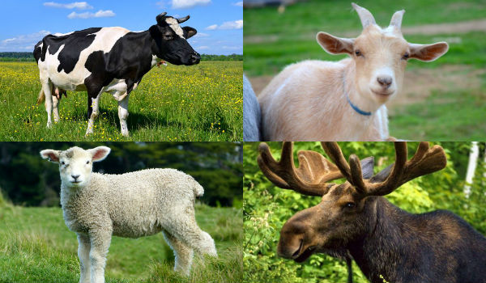 | Cabras, vacas y animales rumiantes. De dieta exclusivamente vegetariana, estos animales extraen de las plantas todo el contenido orgánico necesario para sobrevivir y construir sus propios tejidos, que sirven de sustento a los depredadores. |
| Leones, tigres, grandes depredadores felinos. Los grandes comedores de carne del reino animal requieren de cazar y devorar a otros animales, usualmente a los grandes herbívoros que coincidan con sus hábitats, para así consumir los nutrientes necesarios para poner en marcha su propio metabolismo. | 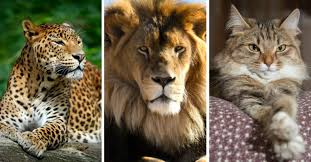 |
| 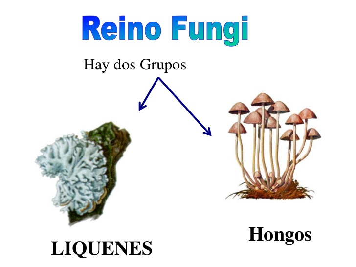 | Hongos y descomponedores del reino fungi. Los hongos, a pesar de ser inmóviles como las plantas, no comparten con ellas la capacidad de fotosíntesis que permite convertir la luz solar en energía, así que deben descomponer y absorber materia orgánica previa, ya sea del humus en descomposición de los suelos en los bosques, de las partes húmedas y encerradas de la piel de un hospedador, o de los excrementos de otros seres vivos, según sea el tipo de hongo (descomponedor, parásito, etc.). |
| Peces y anguilas y rayas. Depredadores del reino animal submarino, organizados en diversas posibles cadenas tróficas en que, como dice el proverbio, siempre hay un pez más grande. Lo cierto es que deben consumir a otros seres vivos más pequeños para asimilar el contenido molecular y calórico de sus cuerpos (por lo general los digieren enteros) y así mantener andando el propio. | 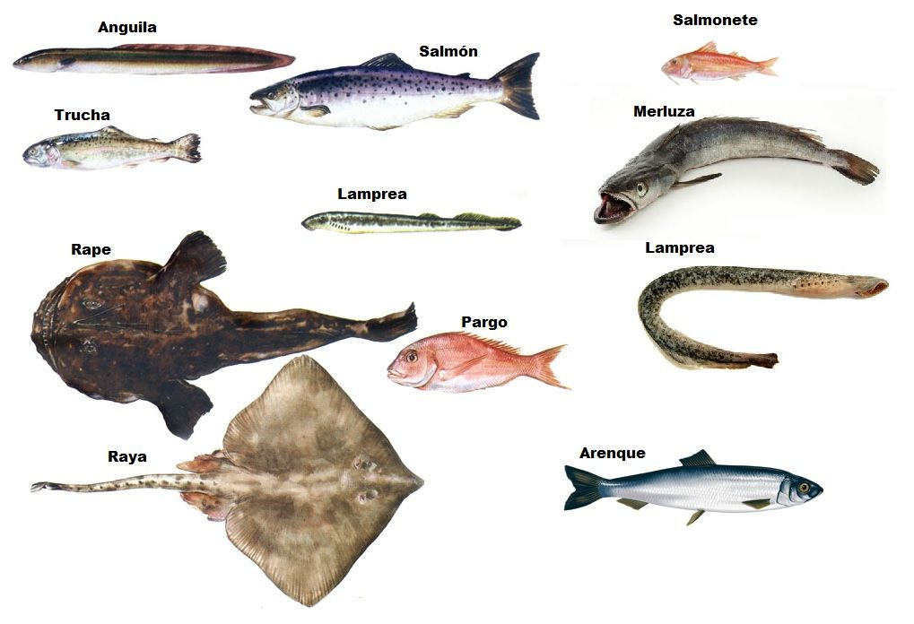 |
| 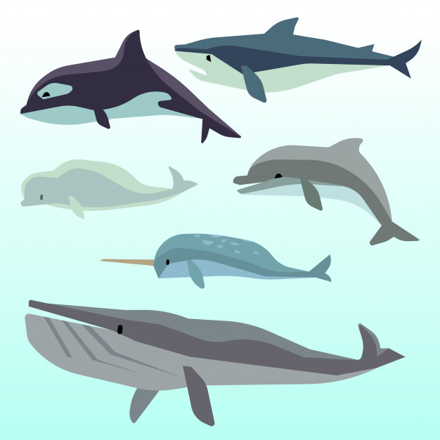 | Ballenas y otros mamíferos marinos. Algunos de estos mamíferos marinos, como el delfín, depredan peces pequeños como la sardina; otros se alimentan del filtrado del plancton microscópico de las aguas, como la ballena. En ambos casos, requieren del consumo y digestión de estos seres vivos para extraer los nutrientes necesarios para la vida. |
| La mayoría de las bacterias. Los organismos más abundantes del planeta, del cual se conoce aproximadamente un 50%, son los grandes transformadores de la materia del planeta. Muchas de ellas son autótrofas, capaces de fotosíntesis o de quimiosíntesis, pero en su gran mayoría se dedican al procesamiento de sustancias orgánicas exteriores, ya sea parasitando a otros seres vivos o descomponiendo materia orgánica muerta | 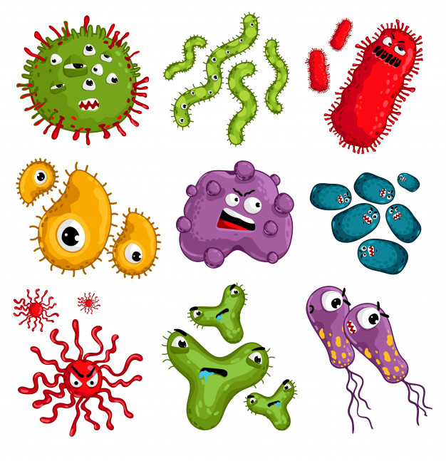 |
| 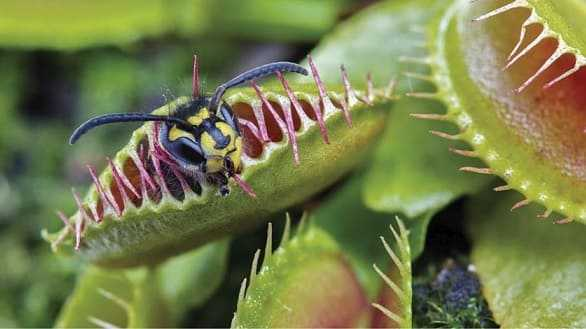 | Plantas carnívoras. Apodadas así porque disponen de órganos específicamente adaptados a la digestión de pequeños insectos que, atraídos por el dulzor de sus aromas (o muchas veces porque huelen a carne en descomposición), luego son apresados y lentamente digeridos para proporcionar a la planta de material orgánico suplementario. |
| Todo tipo de aves. Ya sea que se alimenten de insectos y lombrices, de frutas de los árboles o de sus hojas, de néctar floral, de peces y pequeños roedores, o de otras aves más chicas, las aves en su totalidad requieren de la ingesta y asimilación de materia proveniente de otros seres vivos para poder mantenerse con vida. | 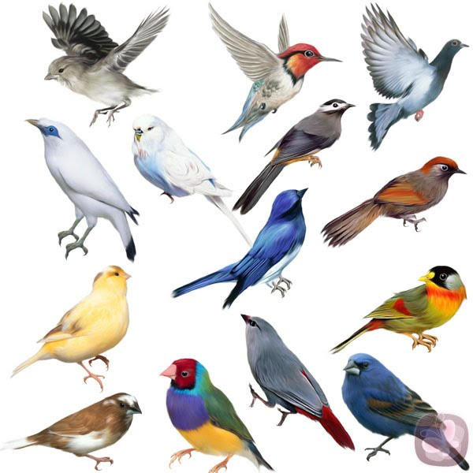 |
| 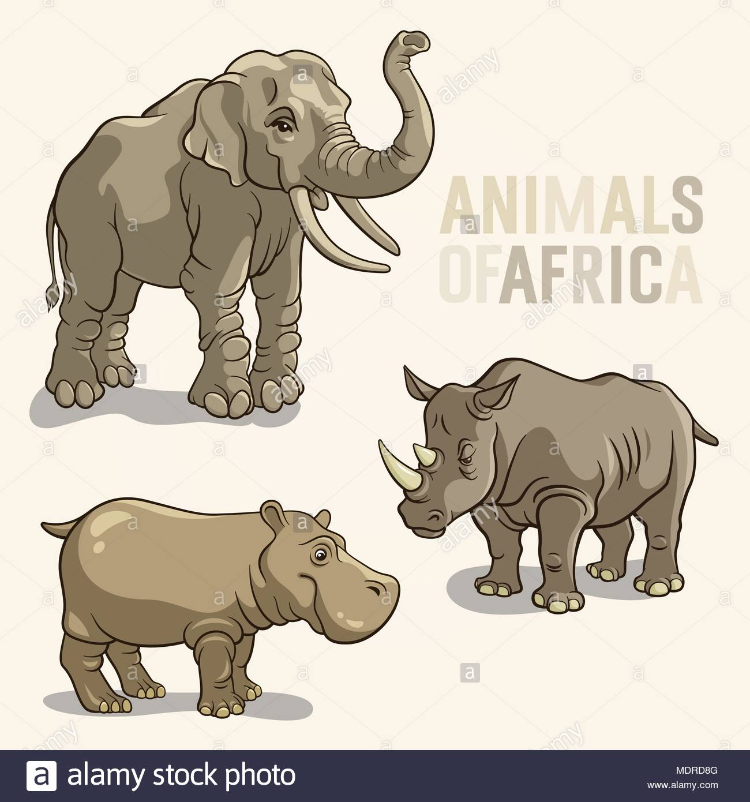 | Elefantes, rinocerontes, hipopótamos. Estos grandes mamíferos africanos, a pesar de su tamaño, se alimentan con toneladas y toneladas de vegetales, semillas, arbustos y cortezas. Todo ello rico en materia orgánica que asimilar y que nutre la composición de sus voluminosos cuerpos cuadrúpedos. |
| Protozoarios. Su nombre significa “primer animal” y se debe a que son organismos unicelulares y eucariotas, pero a su vez depredadores o detritívoros, es decir, heterótrofos (aunque en algunos casos pueden ser mixótrofos o parcialmente autótrofos). Un buen ejemplo de su modo de nutrirse es la amiba (o ameba), que fagocita células de otros tipos, incluidos otros protozoos, y tras aislarlos en su interior los disuelve y asimila al interior de su cuerpo el contenido celular de la presa.. | 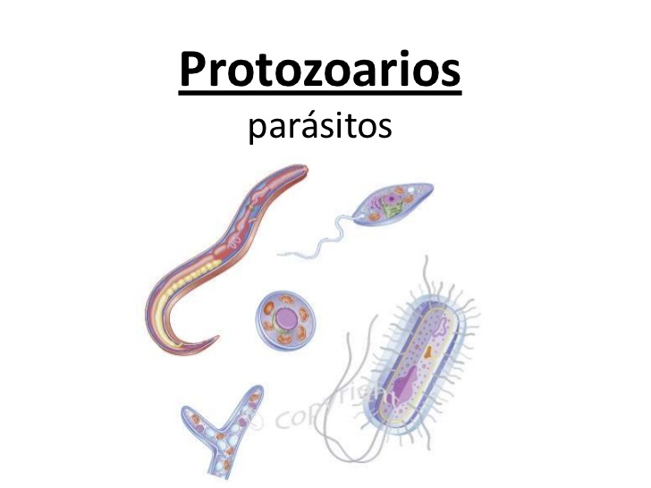 |
| 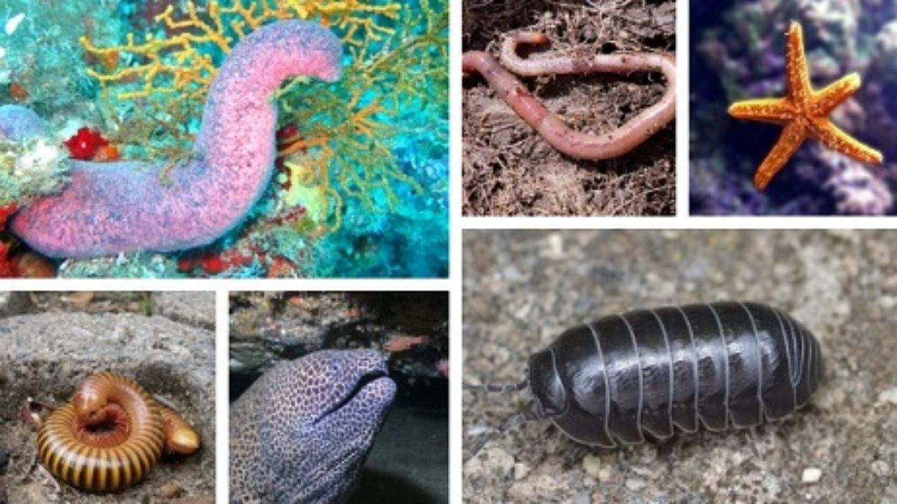 | Lombrices, cochinillas de humedad y otros detritívoros. Se les llama “detritívoros” porque ingieren detritus, es decir, residuos o desechos de otros procesos bióticos, como puede ser madera podrida, restos orgánicos de animales muertos, etc. Estos animales son vitales para la cadena de transmisión de la energía en las pirámides tróficas y son, claro está, heterótrofos. |
| Ratones, marmotas y roedores en general. De dieta amplia y variada, que puede ir de huevos y pequeños lagartos hasta trozos de cartón o madera, los roedores son todos heterótrofos pues dependen de la ingesta de dichos materiales, vivos o no, para poder nutrir el propio cuerpo. | 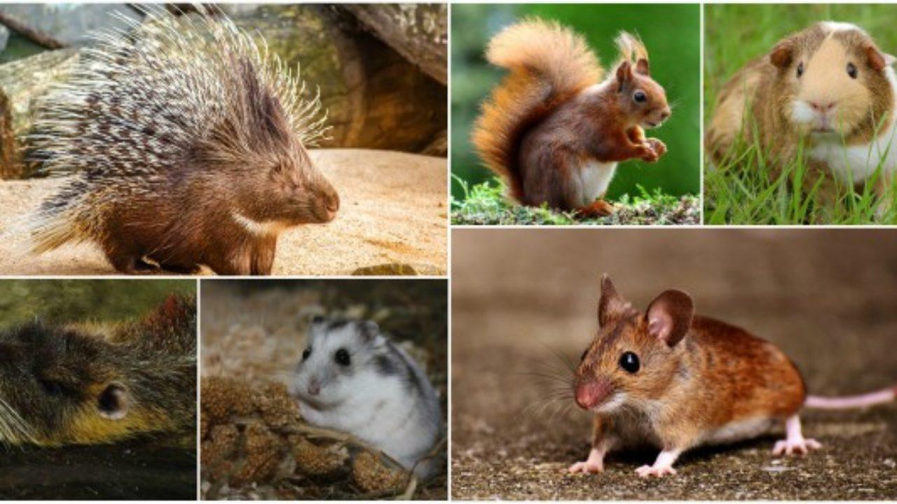 |
| 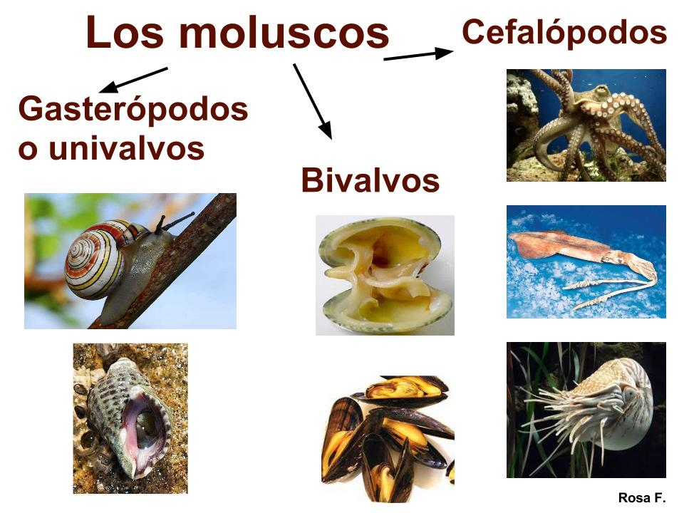 | Pulpos, moluscos y bivalvos. Otros habitantes marinos que suelen o bien depredar crustáceos o incluso moluscos más chicos, o simplemente filtrar el plancton de las aguas a través de un sistema de barbas. Del modo que sea, se trata de seres necesitados de materia orgánica para vivir y provistos de metabolismos adaptados a su dieta específica. |
| Arañas, alacranes y arácnidos. Los grandes depredadores del mundo de los artrópodos, son los arácnidos: los cazadores y devoradores de otros insectos vegetarianos o cazadores a su vez, están equipados con todo el arsenal necesario para violentar o atrapar a sus presas y luego sorber sus jugos para alimentarse, dejando atrás un cascarón vacío y a veces ni siquiera eso. | 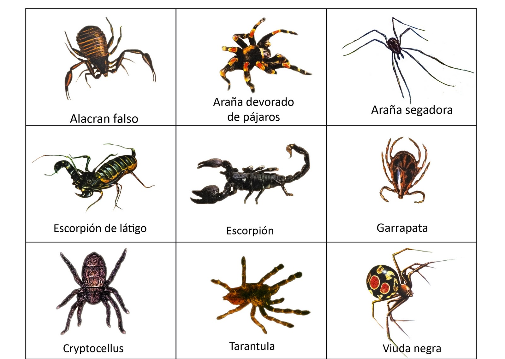 |
| El hombre. El omnívoro mayor, capaz de alimentarse de la mayoría de las especies animales o vegetales que conoce y que cultiva en cautiverio, así como de plantas y vegetales, e incluso de alimentos producidos de manera industrial a partir de sustancias orgánicas, es el ejemplo más cercano de alimentación heterótrofa que tenemos. | |
ELABORADO POR: ALVIN PIERRE RIVERA GUERRERO DEL 6° "A" TM COBAEP PL-26
FUENTES URL CONSULTADAS